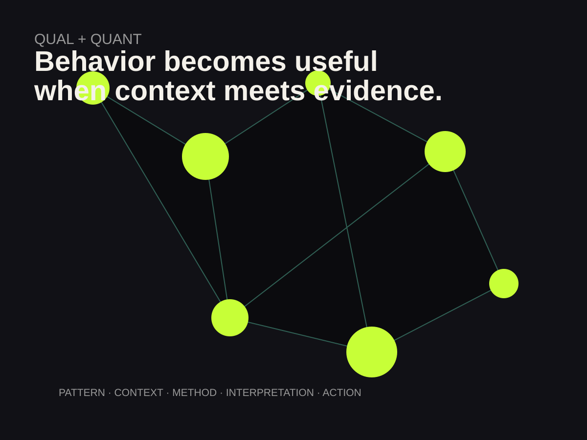

MY STORY
I’ve always been curious about
why people do what they do.
That question has followed me through psychology, research, marketing, performance and social media. The setting changes. The curiosity does not.
01 / PSYCHOLOGY
Behavior before
buzzwords.
Psychology gave me a structured way to think about behavior. Instead of saying “people like this,” I learned to ask how we know, what evidence supports the claim, what else could explain the result, and whether the pattern holds up when we look closer.
That way of thinking still shapes how I look at digital work. I do not want to call something a trend just because I saw it three times. I want to know who is using it, how fast it is moving, what kind of response it creates, and whether it makes sense for the audience in front of me.

Rates, counts, movement, growth, conversion and measurable patterns.
Language, motivation, context, perception and the meaning behind the behavior.
02 / PERFORMANCE
Attention is something
you earn.
Dance taught me something analytics cannot: an audience does not owe you attention. You can be technically prepared and still fail to connect. Performance made me sensitive to pacing, timing, visual composition, tone and the tiny choices that change how something lands.
That is one reason social media made sense to me. It is another environment where presentation and response happen quickly. The audience tells you, sometimes brutally, whether the idea worked.
I’m analytical because I like evidence. I’m creative because evidence still has to become something a person can see, understand and care about.
03 / SOCIAL
My own platforms became
the experiment.
I’ve built an Instagram audience of nearly 10,000 followers and generated more than 1.1 million likes on TikTok. I do not treat that as proof that I have social media “figured out.” I treat it as proof that I’ve spent a lot of time paying attention.
I’ve learned to read the difference between a format that belongs on TikTok and one that feels better on Instagram. I notice when a sound is gaining meaning beyond the original trend. I think about the first seconds, the caption, the framing, the image, and whether the idea feels like something a person would actually stop for.
NEXT